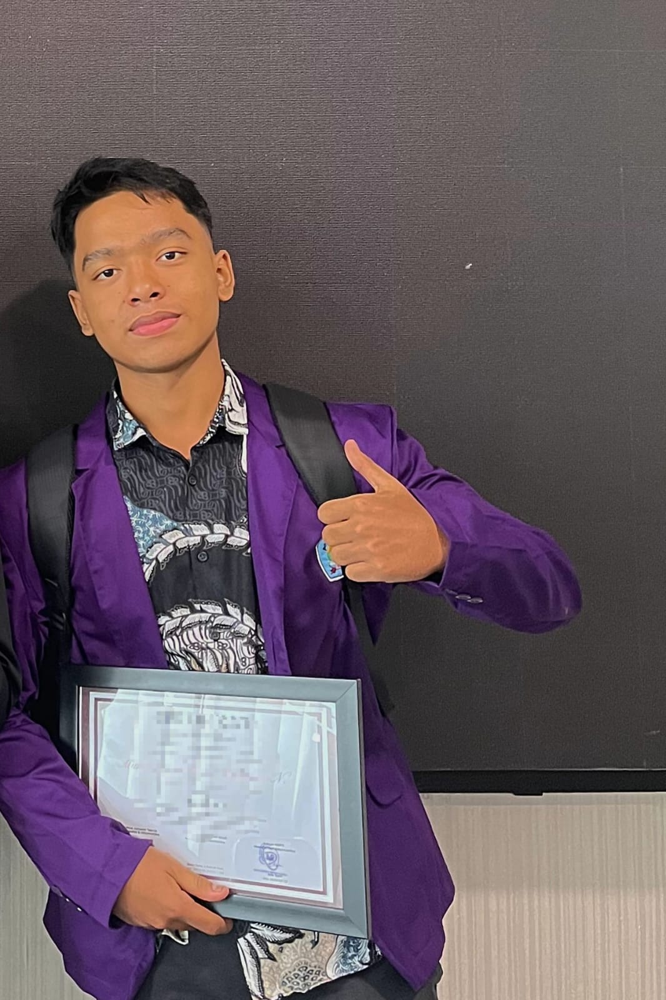

One day in November 2025
|
Tentang saya
Halo, saya Muhammad Azmi Rahman Nasution, Mahasiswa baru program studi Teknologi Informasi Universitas Sumatera Utara 2026. Saya lahir di Medan, tanggal 12 November 2007
Saya memiliki minat yang besar dalam dunia IT terkhususnya untuk pengembangan website untuk saat ini, karena saya dapat mewujudkan ide-ide yang ada di kepala saya dalam bentuk halaman digital. Minat saya ini terbentuk dari studi saya sebelumnya di jurusan IT di kampus sebelumnya.Namun saya menyadari saat memulai kembali disini akan ada sangat banyak hal baru yang akan saya pelajari dan harapannya banyak kesempatan dan prestasi baru yang bisa didapatkan.
Keterampilan & Fun fact :
- Pemrograman Web (HTML,CSS,Javascript) dan framework seperti Laravel dan Nextjs, semua ini saya pelajari otodidak dan harapannya disini dapat belajar dengan lebih terarah dan efektif
- Pengetahuan dasar tentang hardware komputer
- Baik hati dan rajin menabung
- Pernah freelance tutor Bahasa Inggris
- Taken,walaupun gaada yang nanya, info ajh
|